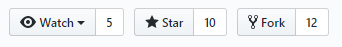
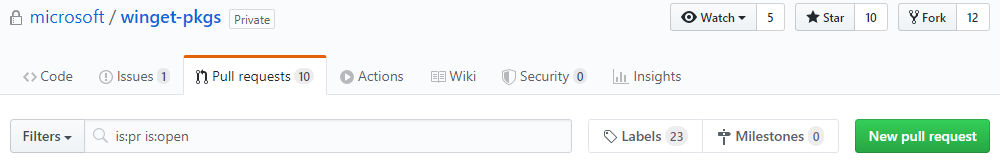
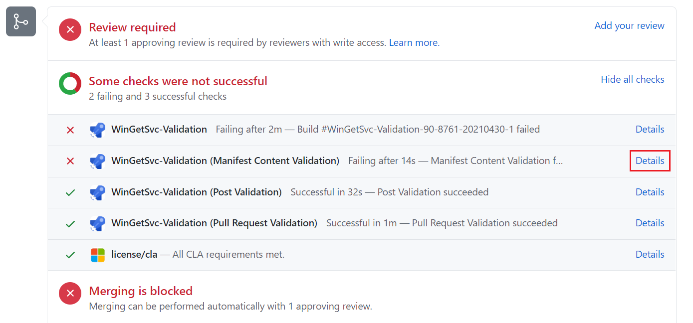
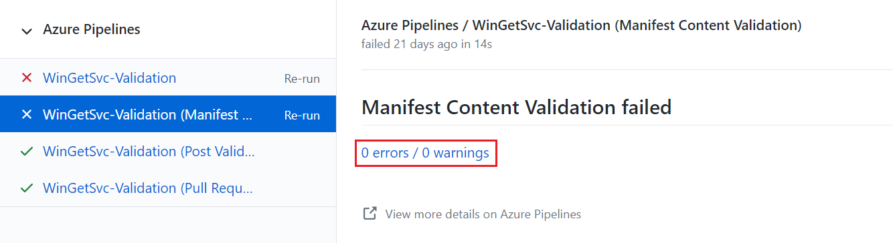
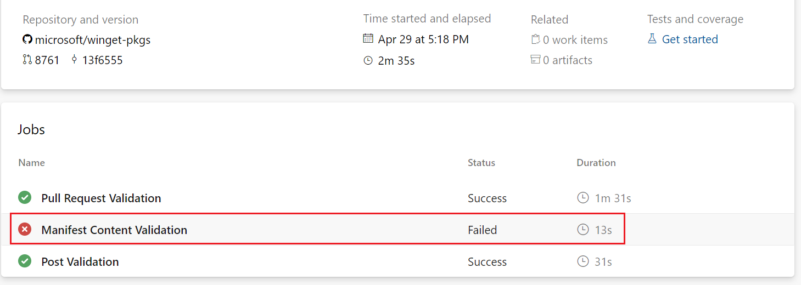
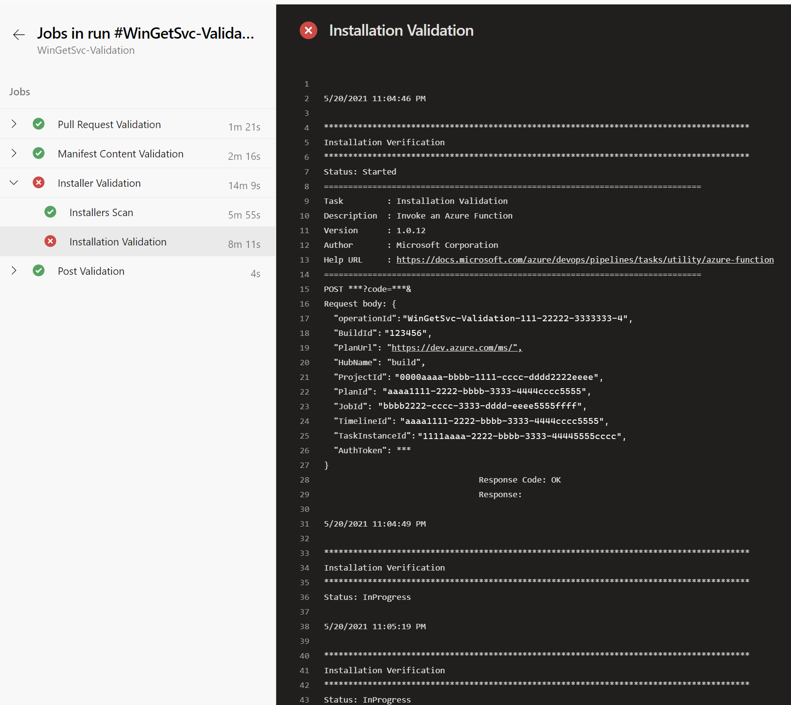

Submit your manifest to the repository
After you create a package manifest that describes your application, you're ready to submit your manifest to the Windows Package Manager repository. This is a public-facing repository that contains a collection of manifests that the winget tool can access. To submit your manifest, you'll upload it to the open source https://github.com/microsoft/winget-pkgs repository on GitHub.
After you submit a pull request to add a new manifest to the GitHub repository, an automated process will validate your manifest file and check to make sure the package complies with the Windows Package Manager polices and is not known to be malicious. If this validation is successful, your package will be added to the public-facing Windows Package Manager repository so it can be discovered by the winget client tool. Note the distinction between the manifests in the open source GitHub repository and the public-facing Windows Package Manager repository.
Important
Microsoft reserves the right to refuse a submission for any reason.
Manifest validation
When you submit a manifest to the https://github.com/microsoft/winget-pkgs repository on GitHub, your manifest will be automatically validated and evaluated for the safety of the Windows ecosystem. Manifests may also be reviewed manually.
For more information about the validation process, see the validation process section below.
How to submit your manifest
To submit a manifest to the repository, follow these steps.
Step 1: Validate your manifest
The winget tool provides the validate command to confirm that you have created your manifest correctly. To validate your manifest, use this command.
winget validate \<path-to-the-manifests>
If your validation fails, use the errors to locate the line number and make a correction. After your manifest is validated, you can submit it to the repository.
Step 2: Test your manifest with Windows Sandbox
The Windows Package Manager repository includes a script that will install the Windows Package Manager in a Sandbox for testing manifest submissions. To run the powershell script, navigate to your winget-pkgs repo. From PowerShell, enter the following command:
powershell .\Tools\SandboxTest.ps1 manifests\m\Microsoft\VisualStudioCode\1.56.0
You may need to update this script with the correct path to your manifest file: .\Tools\SandboxTest.ps1 <path to manifest or manifest folder>
See the full sandbox test script in the winget-pkgs repo.
Step 3: Clone the repository
To create a fork of the Windows Package Manager Community repository and clone the repo to your local machine:
Go to https://github.com/microsoft/winget-pkgs in your browser and select Fork.

From Windows Command Prompt or PowerShell, use the following command to clone your fork.
git clone <your-fork-name>If you are entering multiple submissions, create a branch instead of a fork. We currently allow only one manifest file per submission.
git checkout -b <branch-name>
Step 4: Add your manifest to the local repository
You must add your manifest files to the repository in the following folder structure:
manifests / letter / publisher / application / version
- The manifests folder is the root folder for all manifests in the repository.
- The letter folder is the first letter of the publisher name in the lower case. For example, m of the publisher Microsoft.
- The publisher folder is the name of the company that publishes the software. For example, Microsoft.
- The application folder is the name of the application or tool. For example, VSCode.
- The version folder is the version of the application or tool. For example, 1.0.0.
The PackageIdentifier and the PackageVersion values in the manifest must match the publisher, application names and version in the manifest folder path. For more information, see Create your package manifest.
Step 5: Submit your manifest to the remote repository
You're now ready to push your new manifest to the remote repository.
Use the
commitcommand to add files and commit the change and provide information on the submission.git commit -m "Submitting ContosoApp version 1.0.0" --allUse the
pushcommand to push the changes to the remote repository.git push
Step 6: Create a pull request
After you push your changes, return to https://github.com/microsoft/winget-pkgs and create a pull request to merge your fork or branch to the main branch.

Submission process
When you create a pull request, this will start an automated process that validates the manifests and verifies your pull request. During this process we will run tests against the installer and installed binaries to validate the submission.
We add labels to your pull request so you can track its progress. For more information on labels and the process see the pull request labels section below.
Once complete, your submission will be manually reviewed by a moderator, and after it is approved, your application will be added to the Windows Package Manager catalog.
If there is ever an error during the process, you will be notified and our labels and bot will assist you in fixing your submission. For the list of common errors, see the validation process section below.
Validation process
When you create a pull request to submit your manifest to the Windows Package Manager repository, this will start an automation process that validates the manifest and processes your pull request. GitHub labels are used to share progress and allow you to communicate with us.
Submission expectations
All application submissions to the Windows Package Manager repository should adhere to the Windows Package Manager repository policies.
Expectations for submissions:
- The manifest complies with the schema requirements.
- All URLs in the manifest lead to safe websites.
- The installer and application are virus free. The package may be identified as malware by mistake. If you believe it is a false positive you can submit the installer to the Microsoft Defender team for analysis.
- The application installs and uninstalls correctly for both administrators and non-administrators.
- The installer supports non-interactive modes.
- All manifest entries are accurate and not misleading.
- The installer comes directly from the publisher's website.
For a complete list of the policies, see Windows Package Manager policies.
Pull request labels
During validation, a series of labels are applied to pull requests to communicate progress. Some labels will direct you to take action, while others will be directed to the Windows Package Manager engineering team.
Status labels
The following table describes the status labels you might encounter.
| Label | Details |
|---|---|
| Azure-Pipeline-Passed | The manifest has completed the test pass. It is waiting for approval. If no issues are encountered during the test pass it will automatically be approved. If a test fails, it may be flagged for manual review. |
| Blocking-Issue | This label indicates that the pull request cannot be approved because there is a blocking issue. You can often tell what the blocking issue is by the included error label. |
| Needs-Attention | This label indicates that the pull request needs to be investigated by the Windows Package Manager development team. This is either due to a test failure that needs manual review, or a comment added to the pull request by the community. |
| Needs-Author-Feedback | Indicates there is a failure with the submission. We will reassign the pull request back to you. If you do not address the issue within 10 days, the bot will close the pull request. Needs-Author-Feedback labels are typically added when there was a failure with the pull request that should be updated, or if the person reviewing the pull request has a question. |
| Validation-Completed | Indicates that the test pass has been completed successfully and your pull request will be merged. |
Error labels
The following table describes the error labels you might encounter. Not all of the error cases will be assigned to you immediately. Some may trigger manual validation.
| Label | Details |
|---|---|
| Binary-Validation-Error | The application included in this pull request failed to pass the Installers Scan test. This test is designed to ensure that the application installs on all environments without warnings. For more details on this error, see the Binary validation error section below. |
| Error-Analysis-Timeout | The Binary-Validation-Test test timed out. The pull request will get assigned to a Windows Package Manager engineer to investigate. |
| Error-Hash-Mismatch | The submitted manifest could not be processed because the InstallerSha256 hash provided for the InstallerURL did not match. Update the InstallerSha256 in the pull request and try again. |
| Error-Installer-Availability | The validation service was unable to download the installer. This may be related to Azure IP ranges being blocked, or the installer URL may be incorrect. Check that the InstallerURL is correct and try again. If you feel this has failed in error, add a comment and the pull request will get assigned to a Windows Package Manager engineer to investigate. |
| Manifest-Installer-Validation-Error | There are either inconsistencies or values not present in the manifest during the evaluation of an MSIX package. |
| Manifest-Path-Error | The manifest files must be put into a specific folder structure. This label indicates a problem with the path of your submission. For example, the folder structure does not have the required format. Update your manifest and path resubmit your pull request. |
| Manifest-Validation-Error | The submitted manifest contains a syntax error. Address the syntax issue with the manifest and re-submit. For details on the manifest format and schema, see required format. |
| PullRequest-Error | The pull request is invalid because not all files submitted are under manifest folder or there is more than one package or version in the pull request. Update your pull request to address the issue and try again. |
| URL-Validation-Error | The URLs Validation Test could not locate the URL and responded with a HTTP error status code (403 or 404), or the URL reputation test failed. You can identify which URL is in question by looking at the pull request check details. To address this issue, update the URLs in question to resolve the HTTP error status code. If the issue is not due to an HTTP error status code, you can submit the URL for review to avoid the reputation failure. |
| Validation-Defender-Error | During dynamic testing, Microsoft Defender reported a problem. To reproduce this problem, install your application, then run a Microsoft Defender full scan. If you can reproduce the problem, fix the binary or submit it for analysis for false positive assistance. If you are unable to reproduce the problem, add a comment to get the Windows Package Manager engineers to investigate. |
| Validation-Domain | The test has determined the domain if the InstallerURL does not match the domain expected. The Windows Package Manager policies requires that the InstallerUrl comes directly from the ISV's release location. If you believe this is a false detection, add a comment to the pull request to get the Windows Package Manager engineers to investigate. |
| Validation-Error | Validation of the Windows Package Manager failed during manual approval. Look at the accompanying comment for next steps. |
| Validation-Executable-Error | During installation testing, the test was unable to locate the primary application. Make sure the application installs correctly on all platforms. If your application does not install an application, but should still be included in the repository, add a comment to the pull request to get the Windows Package Manager engineers to investigate. |
| Validation-Hash-Verification-Failed | During installation testing, the application fails to install because the InstallerSha256 no longer matches the InstallerURL hash. This can occur if the application is behind a vanity URL and the installer was updated without updating the InstallerSha256. To address this issue, update the InstallerSha256 associated with the InstallerURL and submit again. |
| Validation-HTTP-Error | The URL used for the installer does not use the HTTPS protocol. Update the InstallerURL to use HTTPS and resubmit the Pull Request. |
| Validation-Indirect-URL | The URL is not coming directly from the ISVs server. Testing has determined a redirector has been used. This is not allowed because the Windows Package Manager policies require that the InstallerUrl comes directly from the ISV's release location. Remove the redirection and resubmit. |
| Validation-Installation-Error | During manual validation of this package, there was a general error. Look at the accompanying comment for next steps. |
| Validation-Merge-Conflict | This package could not be validated due to a merge conflict. Please address the merge conflict and resubmit your pull request. |
| Validation-MSIX-Dependency | The MSIX package has a dependency on package that could not be resolved. Update the package to include the missing components or add the dependency to the manifest file and resubmit the pull request. |
| Validation-Unapproved-URL | The test has determined the domain if the InstallerURL does not match the domain expected. The Windows Package Manager policies requires that the InstallerUrl comes directly from the ISV's release location. |
| Validation-Unattended-Failed | During installation, the test timed out. This most likely is due to the application not installing silently. It could also be due to some other error being encountered and stopping the test. Verify that you can install your manifest without user input. If you need assistance, add a comment to the pull request and the Windows Package Manager engineers will investigate. |
| Validation-Uninstall-Error | During uninstall testing, the application did not clean up completely following uninstall. Look at the accompanying comment for more details. |
| Validation-VCRuntime-Dependency | The package has a dependency on the C++ runtime that could not be resolved. Update the package to include the missing components or add the dependency to the manifest file and resubmit the pull request. |
Content policy labels
The following table lists content policy labels. If one of these labels is added, something in the manifest metadata triggered additional manual content review to ensure that the metadata is following the Windows Package Manager policies.
| Label | Details |
|---|---|
| Policy-Test-2.1 | See General Content Requirements. |
| Policy-Test-2.2 | See Content Including Names, Logos, Original and Third Party |
| Policy-Test-2.3 | See Risk of Harm. |
| Policy-Test-2.4 | See Defamatory, Libelous, Slanderous and Threatening. |
| Policy-Test-2.5 | See Offensive Content. |
| Policy-Test-2.6 | See Alcohol, Tobacco, Weapons and Drugs. |
| Policy-Test-2.7 | See Adult Content. |
| Policy-Test-2.8 | See Illegal Activity. |
| Policy-Test-2.9 | See Excessive Profanity and Inappropriate Content. |
| Policy-Test-2.10 | See Country/Region Specific Requirements. |
| Policy-Test-2.11 | See Age Ratings. |
| Policy-Test-2.12 | See User Generated Content. |
Internal labels
The following table lists internal error labels. When internal errors are encountered, your pull request will be assigned to the Windows Package Manager engineers to investigate.
| Label | Details |
|---|---|
| Internal-Error-Domain | An error occurred during the domain validation of the URL. |
| Internal-Error-Dynamic-Scan | An error occurred during the validation of the installed binaries. |
| Internal-Error-Keyword-Policy | An error occurred during the validation of the manifest. |
| Internal-Error-Manifest | An error occurred during the validation of the manifest. |
| Internal-Error-NoArchitectures | An error occurred because the test could not determine the architecture of the application. |
| Internal-Error-NoSupportedArchitectures | An error occurred because the current architecture is not supported. |
| Internal-Error-PR | An error occurred during the processing of the pull request. |
| Internal-Error-Static-Scan | An error occurred during static analysis of the installers. |
| Internal-Error-URL | An error occurred during reputation validation of the installers. |
| Internal-Error | A generic failure or unknown error was encountered during the test pass. |
Binary validation error
If validation of your Pull Request fails the Installers Scan test and receives a Binary-Validation-Error label, it means that your application failed to install on all environments.
Installers Scan test
To provide an excellent application installation user experience, the Windows Package Manager must ensure that all applications install on PCs without errors, regardless of environment. One key test is to ensure that all applications install without warnings on various popular antivirus configurations. Windows provides the built-in Microsoft Defender antivirus program, but many enterprise customers and users use other antivirus software.
Each submission to the Windows Package Manager Repository is run through several antivirus programs. These programs all have different virus detection algorithms for identifying potentially unwanted applications (PUA) and malware.
Address binary validation errors
If an application fails validation, Microsoft first attempts to verify with the antivirus vendor whether the flagged software is a false positive. In many cases, after notification and validation, the antivirus vendor updates their algorithm, and the application passes.
In some cases, the antivirus vendor can't determine whether the detected code anomaly is a false positive. In this case, the application can't be added to the Windows Package Manager repository. The pull request is rejected with a Binary-Validation-Error label.
If you get a Binary-Validation-Error label on your pull request, update your software to remove the code detected as PUA.
Sometimes, genuine tools used for debugging and low-level activities appear as PUA to antivirus software. This is because the necessary debugging code has a similar signature to unwanted software. Even though this coding practice is legitimate, the Windows Package Manager repository unfortunately can't allow these applications.
Submission Troubleshooting
If your Windows Package Manager submission fails, you can use the labels described above to investigate the reason for the failure.
To investigate pull request failures, take the following steps:
A pull request failure appears at the bottom of the web page with the string Some checks were not successful. Select the Details link next to a failed validation to go to the Azure Pipelines page.

On the Azure Pipelines page, select the 0 errors / 0 warnings link.

On the next page, select the failed job.

The next page shows the output for the failed job. The output should help you identify the change you need to make to fix the manifest.
In the following example, the failure was during the Installation Validation task.
